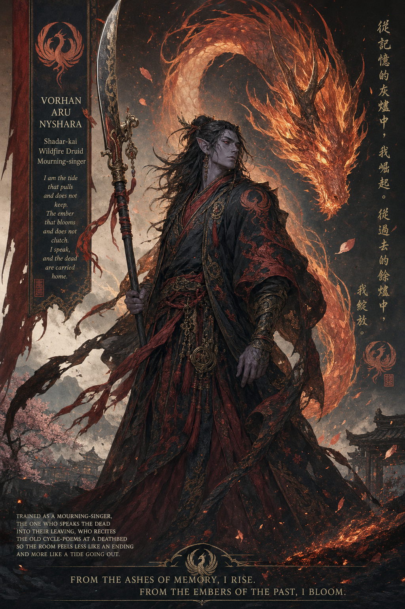

Vorhan Aru Nyshara¶

Player: Gary · Ancestry: Shadar-kai · Class: Druid
Wildfire Druid, Mourning-singer
What the Ash Remembers¶
Long before there were names for any of it, there was only the war — celestial host against fiend host, century folding into century, until the world itself was little more than the ground they fought on. Whole regions burned down to glass. Rivers ran the color of things no one wanted to name. The war did not end because either side won. It ended because the world underneath it was dying, and something older than both armies finally noticed.
The primordials did not take a side. They walked the wreckage afterward the way someone walks through a house after a fire — not to mourn it, but to see what could still be built from what was left. They took the groves that had drunk centuries of spilled blood and breathed elves into the wood. They took the mountains the war had cracked open and woke dwarves in the broken stone. Every race born that way carries a piece of the war's cause in it — a memory of what the fighting was over.
The Shadar-kai are different. No primordial shaped them on purpose. They rose from the ash-fields themselves — the places where nothing grew anymore, where the dead of both armies and neither army had been burned down past distinction. Centuries of grief and heat and unfinished things settled into that ground, and when the primordials came through reweaving the world, something in the ash simply stood up, on its own, before anyone meant for it to. Other peoples call them ash-born, cinder-kin, the war's leftover children. It isn't wrong. The Shadar-kai don't carry a memory of why the war was fought. They carry the memory of how it ended — every ending, all at once, still settling.
That's the inheritance. Not anger. Not even grief, exactly. A people built from the moment after the fire, who know in their bones that ash is not the end of something — it's only the part right before the part where something else gets to grow.
The Mourning-singer's Path¶
Vorhan was raised among those who took that inheritance seriously and turned it into a craft. Mourning-singers don't fight the dying or pretend it isn't happening — they sit with it, and they speak it into something survivable. He learned calligraphy first, the careful work of writing a name down correctly before it could be lost, then herbalism, for the small mercies a body needs at the very end. Later, the words. The old cycle-poems, spoken in a particular cadence, meant to make a room feel less like a wall closing and more like a tide finally allowed to go out.
Because the Shadar-kai belong fully to neither the celestial nor the infernal half of the old war, they were trusted by both to perform last rites for the dying of either side — and so Vorhan grew up fluent in Celestial and Infernal as well as Draconic and Common, a neutral voice at deathbeds that had no business agreeing on anything else. He was good at it. He still is. He has never thought of it as morbid work. Someone has to be the one who isn't afraid of the room.
What he learned slower, and reluctantly, was the fire itself — not the war's fire, the destroying kind, but the kind his own people were made from. Druidic teachers showed him that flame doesn't have to consume to matter. It clears overgrowth so something else can root. It renders fat to ash and the ash feeds the next season's green. He took to it the way he took to the poems: directly, without flinching, already three steps ahead of where the lesson was trying to lead him. His teachers called it impatience. He called it knowing where a thing was going before it got there. Both were probably right.
The Thing He Doesn't Talk About¶
He doesn't tell strangers everything, and there is one thing he doesn't tell anyone. Somewhere in his rites — a name spoken slightly wrong, a verse closed a beat too early, he still isn't certain which — something was left unfinished that should have gone on whole. It hasn't left him since. He doesn't call it a curse. He isn't sure "haunting" is even the right word for something that mostly just waits, just outside the edge of what he can see clearly, the way smoke waits in a room after the fire's already out.
So now there's a ritual he performs every dawn and every dusk, without exception, that cannot be skipped or shortened: he says the names, in order, of everyone he has ever sung into their ending. It isn't superstition to him. It's bookkeeping. It's proof, said out loud twice a day, that the count still holds — that whatever follows him hasn't found a way to add itself to that list yet, or subtract someone he loves from it early.
It is also, not coincidentally, the reason he reads and memorizes poetry that has nothing to do with death at all. He needs somewhere else for his mind to go, sometimes, that isn't the list.
He doesn't know yet whether the thing trailing him is grief that simply never found a shape to settle into, or something the ash itself never finished making. He intends to find out. He intends to end it cleanly, the same way he ends everything — and if he can't end it, he'll see to it that it never reaches the ones he'd build a life with anyway. That's not a vow he's made out loud to anyone yet. It doesn't need saying. It's just true.
Fire That Doesn't Consume¶
People expect a Shadar-kai who works in fire and last rites to be cold, or grim, or quietly furious about all of it. Vorhan finds this mildly funny. He isn't fighting the dark. He's not haunted by rage — he's haunted, full stop, which is a much more specific and much less dramatic problem, and he intends to solve it the way he solves everything: directly, efficiently, and without much patience for theatrics along the way.
His fire is the kind that clears a field, not the kind that burns a city. It's decisive. It's quick to notice what's already over and unwilling to let anyone pretend otherwise out of politeness. It rebuilds as readily as it ends — sometimes in the same breath. He'll talk a stranger out of a bad night with the same calm, unhurried directness he'll use to close out a fight that's already decided. Nothing about him is reluctant. He simply prefers things finished, and he has never once mistaken an ending for a cruelty.
He carries that conviction the way his people carry the ash-fields in their blood: quietly, constantly, and with the settled certainty that whatever burns away clears room for the next green thing to come up through it. He intends to be there to see what grows. He's just not entirely sure yet whether he'll have to burn the thing following him to the ground first, or whether — like everything else he's ever sung to rest — it just needs someone willing to finally say its name correctly.
Bond Details¶
Her name is Kaeth Voss Ilune. She trained beside Vorhan at the same mourning-house, took her vows the same season he did. They were never lovers — something steadier and stranger than that, the kind of bond two people get from years of standing on either side of the same deathbeds, learning to read each other's pauses in the cycle-poems so the verse never broke mid-line. She was better at it than he was, if he's honest. Calmer. She never let her own face show what the room was costing her.
What's happening to her started the same way his did — a name spoken a half-beat wrong, a rite she swears she closed correctly and can't have. She didn't recognize it for what it was until it was already settled in. His version moves fast and stays just out of sight, more presence than symptom. Hers is slower, and worse for being slow: she's started losing names. First the ones from years back, then last season's, and now — in her last letter to him, the handwriting noticeably less steady than the Vorhan remembers — she admitted she'd had to ask someone else what her own teacher was called.
For a mourning-singer, losing the names is the actual death. The list is the work. If it goes, everyone she ever sang to rest goes with it, a second time, properly, and there's no one left to say they mattered.
Vorhan thinks he knows why he's stalled longer than she has — not because he's stronger, but because his daily ritual is exactly the kind of stubborn, repetitive, almost mechanical discipline that seems to be slowing whatever this is down. Two names, every dawn and dusk, no exceptions, for years. She trained differently — looser, more intuitive, trusting her memory instead of drilling it — and it's costing her now. He doesn't know if his method would even transfer. He's never tried teaching it to anyone, because teaching it means explaining why he does it, and that means finally saying the thing out loud he's never said to anyone.
He hasn't gone back yet. Partly because he isn't sure his discipline would help her at all — and turning up empty-handed, after this long, feels like its own kind of cruelty. Partly because some honest, unkind corner of him is afraid of exactly what he'll find if he opens that door and finally has to look at this thing in someone else's face instead of his own.